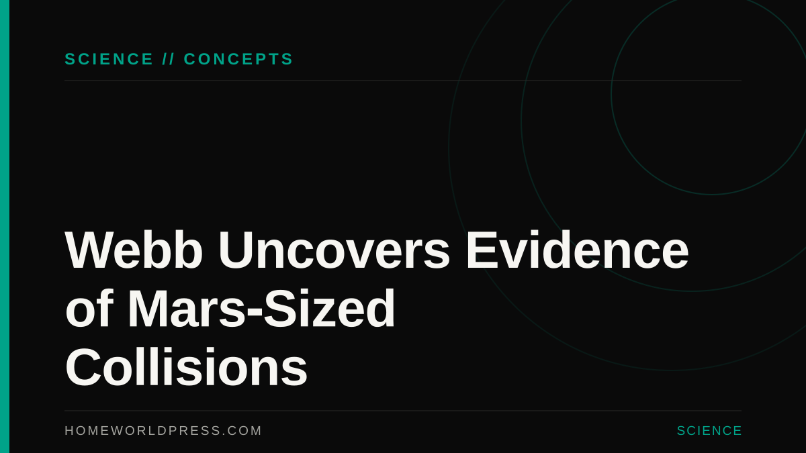

SCIENCE // DEEP SPACE
SCIENCE // DEEP SPACE
What the James Webb Telescope Just Revealed About Rocky Exoplanets in the TRAPPIST-1 System
New mid-infrared spectroscopy data narrows the search for secondary atmospheres on Earth-sized worlds 40 light-years away.
Real-world astrophysics, exoplanet habitability, quantum timekeeping, and orbital instrumentation—for readers who love hard science as much as hard sci-fi.
SCIENCE // DEEP SPACE
New mid-infrared spectroscopy data narrows the search for secondary atmospheres on Earth-sized worlds 40 light-years away.

New infrared observations suggest that rocky planets form through violent, Mars-sized impacts rather than gradual accretion.

Measuring thermal emission across 40 light-years to test whether M-dwarf flares strip planetary atmospheres.

Ice-penetrating radar and plume mass spectrometers are probing the solar system's most promising ocean world.

Shielded by 2,000 miles of lunar rock from Earth's radio chatter, robotic wire-mesh interferometers will listen to the universe's Cosmic Dark Ages.